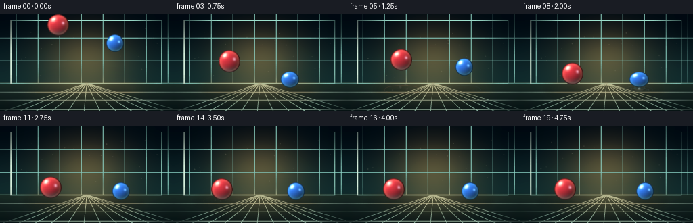
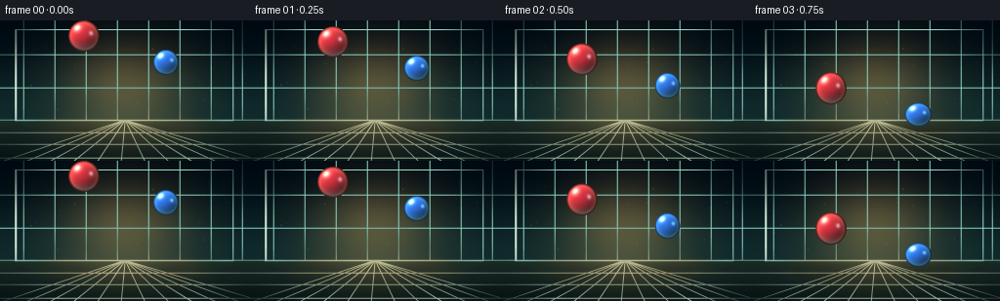
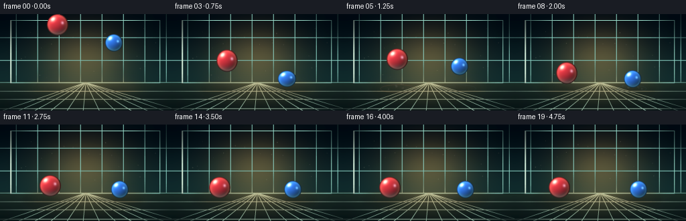

CODING AGENTS AS PIXEL WORLD MODELS
traex/DeepSeek-V4.1-Flash · instance_preservation_0024
点击播放 · 原生 RGB 像素
逐轮保存的候选
回放视频、检查图与代码变化。
每份候选均可单独播放。实际图片检查记录在下方工具轨迹中。
候选 01播放与检查图
点击播放 · 原生 RGB 像素


展开代码变化
--- 上一保存版本
+++ 本次保存版本
@@ -0,0 +1,434 @@
+from __future__ import annotations
+
+import math
+from dataclasses import dataclass
+from pathlib import Path
+
+import numpy as np
+from PIL import Image, ImageDraw, ImageFilter
+
+import artifact_io
+
+
+WIDTH = 256
+HEIGHT = 144
+FPS = 4
+FRAMES = 20
+SCALE = 4
+GROUND_Y = 110.0
+
+
+@dataclass
+class Ball:
+ name: str
+ color: tuple[int, int, int]
+ rim_color: tuple[int, int, int]
+ radius: float
+ x0: float
+ y0: float
+ vx: float
+ restitution: float
+
+ @property
+ def floor_center(self) -> float:
+ return GROUND_Y - self.radius
+
+
+@dataclass
+class Impact:
+ time: float
+ x: float
+ strength: float
+ ball_index: int
+ index: int
+
+
+BALLS = [
+ Ball("red", (218, 48, 58), (255, 159, 112), 16.0, 86.0, 16.0, -4.0, 0.64),
+ Ball("blue", (47, 116, 230), (103, 220, 255), 13.0, 170.0, 43.0, 3.2, 0.60),
+]
+
+
+def smoothstep(edge0: float, edge1: float, value: np.ndarray | float):
+ x = np.clip((value - edge0) / (edge1 - edge0), 0.0, 1.0)
+ return x * x * (3.0 - 2.0 * x)
+
+
+def simulate() -> tuple[dict[str, np.ndarray], list[Impact]]:
+ dt = 1.0 / 240.0
+ steps = round((FRAMES / FPS) / dt) + 1
+ gravity = 190.0
+ result: dict[str, np.ndarray] = {}
+ events: list[Impact] = []
+
+ for ball_index, ball in enumerate(BALLS):
+ y = ball.y0
+ vy = 0.0
+ ys = np.zeros(steps, dtype=np.float64)
+ vys = np.zeros(steps, dtype=np.float64)
+ xs = np.zeros(steps, dtype=np.float64)
+ impact_count = 0
+
+ for step in range(steps):
+ t = step * dt
+ xs[step] = ball.x0 + ball.vx * t
+ if y >= ball.floor_center:
+ speed = abs(vy)
+ if speed > 24.0:
+ impact_count += 1
+ events.append(
+ Impact(
+ time=t,
+ x=float(xs[step]),
+ strength=float(np.clip(speed / 175.0, 0.22, 1.0)),
+ ball_index=ball_index,
+ index=impact_count,
+ )
+ )
+ vy = -speed * ball.restitution
+ else:
+ y = ball.floor_center
+ vy = 0.0
+ ys[step] = y
+ vys[step] = vy
+ vy += gravity * dt
+ y += vy * dt
+
+ result[f"{ball.name}_y"] = ys
+ result[f"{ball.name}_vy"] = vys
+ result[f"{ball.name}_x"] = xs
+
+ result["dt"] = np.array([dt])
+ return result, events
+
+
+def make_background() -> Image.Image:
+ h = HEIGHT * SCALE
+ w = WIDTH * SCALE
+ yy = np.linspace(0.0, 1.0, h, dtype=np.float32)[:, None]
+
+ wall_top = np.array([4, 14, 22], dtype=np.float32)
+ wall_horizon = np.array([19, 45, 47], dtype=np.float32)
+ wall = wall_top + (wall_horizon - wall_top) * smoothstep(0.0, 0.73, yy)
+
+ floor_t = np.clip((yy - 0.70) / 0.30, 0.0, 1.0)
+ floor_top = np.array([30, 47, 42], dtype=np.float32)
+ floor_bottom = np.array([12, 24, 25], dtype=np.float32)
+ floor = floor_top + (floor_bottom - floor_top) * floor_t
+
+ arr = np.broadcast_to(wall[:, None, :], (h, w, 3)).copy()
+ floor_mask = yy >= 0.70
+ arr = np.where(floor_mask[:, :, None], floor[:, None, :], arr)
+
+ # Broad, warm studio light gives the dark teal room depth.
+ light = np.zeros((h, w, 3), dtype=np.float32)
+ cx, cy = w * 0.50, h * 0.48
+ dx = (np.arange(w, dtype=np.float32)[None, :] - cx) / (w * 0.40)
+ dy = (np.arange(h, dtype=np.float32)[:, None] - cy) / (h * 0.55)
+ glow = np.exp(-(dx * dx + dy * dy) * 2.7)
+ light += glow[:, :, None] * np.array([76, 52, 22], dtype=np.float32)
+ arr += light
+
+ # Restrained architectural seams keep the camera space legible.
+ image = Image.fromarray(np.clip(arr, 0, 255).astype(np.uint8), "RGB").convert("RGBA")
+ draw = ImageDraw.Draw(image, "RGBA")
+
+ for x in range(24, WIDTH, 32):
+ draw.line((x * SCALE, 0, x * SCALE, 102 * SCALE), fill=(143, 211, 196, 12), width=SCALE)
+ for y in (35, 69, 102):
+ draw.line((0, y * SCALE, w, y * SCALE), fill=(139, 208, 195, 13), width=SCALE)
+
+ draw.rectangle(
+ (16 * SCALE, 9 * SCALE, 239 * SCALE, 103 * SCALE),
+ outline=(157, 221, 203, 19),
+ width=SCALE,
+ )
+ draw.line((16 * SCALE, 9 * SCALE, 16 * SCALE, 103 * SCALE), fill=(211, 236, 217, 23), width=2 * SCALE)
+
+ # Perspective floor grid and a warm pool of light beneath the action.
+ horizon_y = 102 * SCALE
+ for bottom_x in range(4, WIDTH + 24, 24):
+ draw.line(
+ (128 * SCALE, horizon_y, bottom_x * SCALE, h),
+ fill=(151, 191, 172, 17),
+ width=SCALE,
+ )
+ for y in (115, 127, 141):
+ draw.line((0, y * SCALE, w, y * SCALE), fill=(167, 197, 177, 15), width=SCALE)
+
+ light_layer = Image.new("RGBA", image.size, (0, 0, 0, 0))
+ light_draw = ImageDraw.Draw(light_layer, "RGBA")
+ light_draw.ellipse(
+ (36 * SCALE, 92 * SCALE, 220 * SCALE, 127 * SCALE),
+ fill=(255, 193, 119, 26),
+ )
+ light_draw.ellipse(
+ (77 * SCALE, 101 * SCALE, 179 * SCALE, 121 * SCALE),
+ fill=(255, 222, 158, 20),
+ )
+ light_layer = light_layer.filter(ImageFilter.GaussianBlur(12 * SCALE))
+ image = Image.alpha_composite(image, light_layer)
+
+ # Soft vignette focuses attention on the two spheres.
+ vignette = Image.new("L", image.size, 0)
+ vd = ImageDraw.Draw(vignette)
+ vd.ellipse((-31 * SCALE, -26 * SCALE, 287 * SCALE, 173 * SCALE), fill=255)
+ vignette = vignette.filter(ImageFilter.GaussianBlur(23 * SCALE))
+ dark = Image.new("RGBA", image.size, (1, 8, 12, 0))
+ dark.putalpha(Image.eval(vignette, lambda value: int((255 - value) * 0.48)))
+ image = Image.alpha_composite(image, dark)
+
+ return image.convert("RGB")
+
+
+def add_shadow(
+ image: Image.Image,
+ x: float,
+ radius: float,
+ bottom_y: float,
+ color: tuple[int, int, int],
+) -> Image.Image:
+ height = max(0.0, GROUND_Y - bottom_y)
+ lift = np.clip(height / 75.0, 0.0, 1.0)
+ spread = 1.0 - 0.32 * lift
+ shadow_x = x - height * 0.075
+ shadow_y = GROUND_Y + 2.2
+ width = radius * 1.55 * spread
+ shadow_h = max(3.5, radius * 0.43 * spread)
+
+ layer = Image.new("RGBA", image.size, (0, 0, 0, 0))
+ draw = ImageDraw.Draw(layer, "RGBA")
+ alpha = int(102 * (1.0 - 0.56 * lift))
+ for grow, a in ((1.7, 0.35), (1.0, 0.48), (0.55, 0.72)):
+ draw.ellipse(
+ (
+ (shadow_x - width * grow) * SCALE,
+ (shadow_y - shadow_h * grow) * SCALE,
+ (shadow_x + width * grow) * SCALE,
+ (shadow_y + shadow_h * grow) * SCALE,
+ ),
+ fill=(*color, int(alpha * a)),
+ )
+ layer = layer.filter(ImageFilter.GaussianBlur(3.2 * SCALE))
+ return Image.alpha_composite(image.convert("RGBA"), layer).convert("RGB")
+
+
+def add_motes(image: Image.Image, t: float) -> Image.Image:
+ rng = np.random.default_rng(914)
+ layer = Image.new("RGBA", image.size, (0, 0, 0, 0))
+ draw = ImageDraw.Draw(layer, "RGBA")
+ for i in range(24):
+ x0 = float(rng.uniform(12, 244))
+ y0 = float(rng.uniform(18, 98))
+ phase = float(rng.uniform(0, math.tau))
+ drift = float(rng.uniform(0.6, 2.1))
+ x = x0 + math.sin(t * 0.43 + phase) * drift
+ y = y0 + math.cos(t * 0.31 + phase * 1.3) * drift * 1.8 - t * 0.32
+ size = 0.35 + (i % 3) * 0.18
+ alpha = 16 + (i % 4) * 6
+ draw.ellipse(
+ ((x - size) * SCALE, (y - size) * SCALE, (x + size) * SCALE, (y + size) * SCALE),
+ fill=(242, 226, 180, alpha),
+ )
+ return Image.alpha_composite(image.convert("RGBA"), layer).convert("RGB")
+
+
+def add_impacts(
+ image: Image.Image,
+ t: float,
+ events: list[Impact],
+) -> Image.Image:
+ layer = Image.new("RGBA", image.size, (0, 0, 0, 0))
+ draw = ImageDraw.Draw(layer, "RGBA")
+
+ for event in events:
+ age = t - event.time
+ if age < 0.0 or age > 0.85:
+ continue
+ ball = BALLS[event.ball_index]
+ fade = max(0.0, 1.0 - age / 0.85)
+ ring_radius = ball.radius * (0.85 + age * 2.4)
+ ring_alpha = int(145 * event.strength * fade * fade)
+ ring_y = GROUND_Y + 1.5
+ draw.ellipse(
+ (
+ (event.x - ring_radius) * SCALE,
+ (ring_y - ring_radius * 0.24) * SCALE,
+ (event.x + ring_radius) * SCALE,
+ (ring_y + ring_radius * 0.24) * SCALE,
+ ),
+ outline=(*ball.rim_color, ring_alpha),
+ width=max(1, int(SCALE * 1.15)),
+ )
+ if age < 0.19:
+ flash = 1.0 - age / 0.19
+ draw.ellipse(
+ (
+ (event.x - 8 * flash) * SCALE,
+ (ring_y - 2.0 * flash) * SCALE,
+ (event.x + 8 * flash) * SCALE,
+ (ring_y + 2.0 * flash) * SCALE,
+ ),
+ fill=(255, 244, 211, int(115 * flash * event.strength)),
+ )
+
+ rng = np.random.default_rng(300 + event.ball_index * 29 + event.index)
+ for particle in range(13):
+ angle = float(rng.uniform(math.pi * 1.02, math.pi * 1.98))
+ speed = float(rng.uniform(20.0, 58.0)) * (0.55 + event.strength * 0.45)
+ vx = math.cos(angle) * speed
+ vy = math.sin(angle) * speed * 0.50 - float(rng.uniform(1.0, 12.0))
+ px = event.x + vx * age
+ py = GROUND_Y + 0.5 + vy * age + 34.0 * age * age
+ size = float(rng.uniform(0.55, 1.55)) * (0.75 + event.strength * 0.30)
+ particle_fade = max(0.0, 1.0 - age / 0.58)
+ alpha = int(125 * particle_fade * particle_fade)
+ tint = tuple(
+ int(ball.rim_color[channel] * 0.30 + 235 * 0.70) for channel in range(3)
+ )
+ draw.ellipse(
+ ((px - size) * SCALE, (py - size) * SCALE, (px + size) * SCALE, (py + size) * SCALE),
+ fill=(*tint, alpha),
+ )
+
+ layer = layer.filter(ImageFilter.GaussianBlur(0.42 * SCALE))
+ return Image.alpha_composite(image.convert("RGBA"), layer).convert("RGB")
+
+
+def ball_squash(ball_index: int, t: float, events: list[Impact]) -> float:
+ squash = 0.0
+ for event in events:
+ if event.ball_index != ball_index:
+ continue
+ age = t - event.time
+ if -0.02 <= age < 0.17:
+ if age < 0.0:
+ q = 0.35
+ else:
+ q = max(0.0, 1.0 - age / 0.17)
+ squash = max(squash, q * (0.72 + 0.28 * event.strength))
+ return squash
+
+
+def draw_ball(
+ image: Image.Image,
+ center_x: float,
+ center_y: float,
+ ball: Ball,
+ squash: float,
+ vertical_speed: float,
+) -> Image.Image:
+ stretch = 0.0
+ if abs(vertical_speed) > 75.0 and squash < 0.05:
+ stretch = min(0.045, abs(vertical_speed) / 3400.0)
+ rx = ball.radius * (1.0 + 0.17 * squash - 0.35 * stretch)
+ ry = ball.radius * (1.0 - 0.17 * squash + stretch)
+
+ pad = 2.2
+ x0 = int(math.floor((center_x - rx - pad) * SCALE))
+ y0 = int(math.floor((center_y - ry - pad) * SCALE))
+ x1 = int(math.ceil((center_x + rx + pad) * SCALE))
+ y1 = int(math.ceil((center_y + ry + pad) * SCALE))
+ x0 = max(0, x0)
+ y0 = max(0, y0)
+ x1 = min(image.width, x1)
+ y1 = min(image.height, y1)
+
+ px = (np.arange(x0, x1, dtype=np.float32) + 0.5) / SCALE
+ py = (np.arange(y0, y1, dtype=np.float32) + 0.5) / SCALE
+ xx, yy = np.meshgrid(px, py)
+ nx = (xx - center_x) / rx
+ ny = (yy - center_y) / ry
+ radial = np.sqrt(nx * nx + ny * ny)
+ inside = radial <= 1.0
+ nz = np.sqrt(np.clip(1.0 - nx * nx - ny * ny, 0.0, 1.0))
+
+ light = np.array([-0.43, -0.53, 0.73], dtype=np.float32)
+ light /= np.linalg.norm(light)
+ diffuse = np.clip(nx * light[0] + ny * light[1] + nz * light[2], 0.0, 1.0)
+ base = np.array(ball.color, dtype=np.float32) / 255.0
+
+ color = base[None, None, :] * (0.23 + 0.82 * diffuse[:, :, None])
+ color += np.array([0.035, 0.045, 0.052], dtype=np.float32)[None, None, :]
+
+ rim = np.clip((1.0 - nz) / 0.42, 0.0, 1.0) ** 1.7
+ rim_col = np.array(ball.rim_color, dtype=np.float32) / 255.0
+ color += rim[:, :, None] * rim_col[None, None, :] * 0.21
+
+ # Cool reflected light along the lower edge and a warm floor bounce.
+ lower = smoothstep(0.25, 0.95, ny)
+ color += lower[:, :, None] * np.array([0.06, 0.105, 0.12], dtype=np.float32)[None, None, :]
+ color -= lower[:, :, None] * base[None, None, :] * 0.10
+
+ spec = np.clip(diffuse, 0.0, 1.0) ** 34.0
+ spec2 = np.clip(nx * 0.46 + ny * -0.18 + nz * 0.87, 0.0, 1.0) ** 96.0
+ color += spec[:, :, None] * np.array([0.92, 0.86, 0.72], dtype=np.float32)[None, None, :]
+ color += spec2[:, :, None] * np.array([0.30, 0.43, 0.48], dtype=np.float32)[None, None, :]
+
+ edge = smoothstep(0.86, 0.985, radial)
+ color *= (1.0 - edge * 0.54)[:, :, None]
+ color = np.clip(color, 0.0, 1.0) * 255.0
+ color = np.round(color / 3.0) * 3.0
+
+ distance_px = (1.0 - radial) * min(rx, ry) * SCALE
+ alpha = np.clip(distance_px + 0.55, 0.0, 1.0) * 255.0
+ alpha[~inside] = 0.0
+
+ rgba = np.zeros((y1 - y0, x1 - x0, 4), dtype=np.uint8)
+ rgba[:, :, :3] = color.astype(np.uint8)
+ rgba[:, :, 3] = alpha.astype(np.uint8)
+ sprite = Image.fromarray(rgba, "RGBA")
+ image_rgba = image.convert("RGBA")
+ image_rgba.alpha_composite(sprite, (x0, y0))
+ return image_rgba.convert("RGB")
+
+
+def render_frame(
+ background: Image.Image,
+ t: float,
+ states: dict[str, np.ndarray],
+ events: list[Impact],
+) -> np.ndarray:
+ dt = float(states["dt"][0])
+ index = min(round(t / dt), len(states["red_y"]) - 1)
+ image = background.copy()
+
+ dynamic = [BALLS[0], BALLS[1]]
+ for ball in dynamic:
+ x = float(states[f"{ball.name}_x"][index])
+ y = float(states[f"{ball.name}_y"][index])
+ bottom = y + ball.radius
+ image = add_shadow(image, x, ball.radius, bottom, (2, 11, 14))
+
+ image = add_motes(image, t)
+ image = add_impacts(image, t, events)
+
+ for ball_index, ball in enumerate(BALLS):
+ x = float(states[f"{ball.name}_x"][index])
+ y = float(states[f"{ball.name}_y"][index])
+ vy = float(states[f"{ball.name}_vy"][index])
+ q = ball_squash(ball_index, t, events)
+ image = draw_ball(image, x, y, ball, q, vy)
+
+ image = image.resize((WIDTH, HEIGHT), Image.Resampling.BOX)
+ frame = np.asarray(image, dtype=np.uint8).copy()
+
+ # A gentle highlight rolloff keeps the small palette from clipping harshly.
+ frame_float = frame.astype(np.float32)
+ frame_float = (frame_float - 128.0) * 1.035 + 128.0
+ return np.clip(frame_float, 0, 255).astype(np.uint8)
+
+
+def main() -> None:
+ case_dir = Path(__file__).resolve().parent
+ states, events = simulate()
+ background = make_background()
+ frames = [
+ render_frame(background, frame_index / FPS, states, events)
+ for frame_index in range(FRAMES)
+ ]
+ artifact_io.save(np.stack(frames), case_dir)
+
+
+if __name__ == "__main__":
+ main()
候选 02播放与检查图
点击播放 · 原生 RGB 像素

展开代码变化
--- 上一保存版本
+++ 本次保存版本
@@ -74,7 +74,12 @@
xs[step] = ball.x0 + ball.vx * t
if y >= ball.floor_center:
speed = abs(vy)
- if speed > 24.0:
+ recently_hit = bool(
+ events
+ and events[-1].ball_index == ball_index
+ and t - events[-1].time < 0.20
+ )
+ if speed > 24.0 and not recently_hit:
impact_count += 1
events.append(
Impact(
@@ -130,7 +135,7 @@
arr += light
# Restrained architectural seams keep the camera space legible.
- image = Image.fromarray(np.clip(arr, 0, 255).astype(np.uint8), "RGB").convert("RGBA")
+ image = Image.fromarray(np.clip(arr, 0, 255).astype(np.uint8)).convert("RGBA")
draw = ImageDraw.Draw(image, "RGBA")
for x in range(24, WIDTH, 32):
@@ -377,7 +382,7 @@
rgba = np.zeros((y1 - y0, x1 - x0, 4), dtype=np.uint8)
rgba[:, :, :3] = color.astype(np.uint8)
rgba[:, :, 3] = alpha.astype(np.uint8)
- sprite = Image.fromarray(rgba, "RGBA")
+ sprite = Image.fromarray(rgba)
image_rgba = image.convert("RGBA")
image_rgba.alpha_composite(sprite, (x0, y0))
return image_rgba.convert("RGB")
可观测工具轨迹
实际执行的命令与返回图片。
命令 1exit 0
/bin/bash -c "pwd && rg --files -g '"'!*.mp4'"' -g '"'!*.mov'"' -g '"'!*.avi'"' -g '"'!*.webm'"'"
命令 2exit 0
/bin/bash -c 'git status --short --branch'
命令 3exit 0
/bin/bash -c 'cat GENERATION_RULES.md'
命令 4exit 0
/bin/bash -c 'cat prompt.txt'
命令 5exit 0
/bin/bash -c 'cat task_spec.json'
命令 6exit 0
/bin/bash -c "cat artifact_io.py && printf '\\n---PLAYER---\\n' && cat player_template.html"
命令 7exit 0
/bin/bash -c "python - <<'PY'
import sys, numpy, PIL
print(sys.version)
print('numpy', numpy.__version__)
print('Pillow', PIL.__version__)
PY"命令 8exit 1
/bin/bash -c 'python generate.py'
命令 9exit 0
/bin/bash -c 'python generate.py'
命令 10exit 0
/bin/bash -c 'ls -lh frames inspection.png transition_check.png pixels.npz index.html generate.py && identify inspection.png transition_check.png frames/00.png frames/19.png 2>/dev/null || true'
命令 11exit 0
/bin/bash -c "python - <<'PY'
from PIL import Image
import numpy as np, glob
ims=[np.array(Image.open(p)) for p in sorted(glob.glob('frames/*.png'))]
for i,a in enumerate(ims):
red=((a[:,:,0]>120)&(a[:,:,0]>a[:,:,2]*1.3)).sum()
blue=((a[:,:,2]>100)&(a[:,:,2]>a[:,:,0]*1.15)).sum()
print(f'{i:02d} mean={a.mean():5.1f} std={a.std():5.1f} redpx={red:4d} bluepx={blue:4d} diff={(0 if i==0 else np.abs(a.astype(int)-ims[i-1].astype(int)).mean()):5.2f}')
PY"命令 12exit 0
/bin/bash -c "python - <<'PY'
import generate
states, events=generate.simulate()
print('events:', [(round(e.time,2), generate.BALLS[e.ball_index].name, round(e.x,1), round(e.strength,2)) for e in events])
for f in range(20):
t=f/4
row=[]
for b in generate.BALLS:
i=min(round(t/states['dt'][0]),len(states[b.name+'_y'])-1)
row.append(f\"{b.name} x={states[b.name+'_x'][i]:5.1f} y={states[b.name+'_y'][i]:5.1f}\")
print(f'{f:02d} {t:.2f}s', ' | '.join(row))
PY"命令 13exit 0
/bin/bash -c 'command -v chafa || command -v viu || command -v img2txt || command -v jp2 || true'
命令 14exit 0
/bin/bash -c "python - <<'PY'
from PIL import Image
im=Image.open('inspection.png')
print(im.size)
# Print an ANSI truecolor preview using half-block characters.
im=im.resize((96, 62), Image.Resampling.LANCZOS).convert('RGB')
p=im.load(); chars='â'
for y in range(0, im.height, 2):
line=[]
for x in range(im.width):
a=p[x,y]; b=p[x,min(y+1,im.height-1)]
line.append(f'\\x1b[38;2;{a[0]};{a[1]};{a[2]}m\\x1b[48;2;{b[0]};{b[1]};{b[2]}m{chars}')
print(''.join(line)+'\\x1b[0m')
PY"命令 15exit 0
/bin/bash -c "python - <<'PY'
from PIL import Image, ImageOps, ImageEnhance
for name in ['frames/00.png','frames/03.png','frames/04.png','frames/08.png','frames/19.png']:
im=Image.open(name).convert('RGB').resize((64,36),Image.Resampling.LANCZOS)
print('\\n',name)
ramp=' .,:;irsXA253hMHGS#9B&@'
for y in range(im.height):
line=''
for x in range(im.width):
r,g,b=im.getpixel((x,y)); v=(0.2126*r+0.7152*g+0.0722*b)/255
line += ramp[min(len(ramp)-1,int(v*(len(ramp)-1)*1.7))]
print(line)
PY"命令 16exit 0
/bin/bash -c "python generate.py && python - <<'PY' import generate _, events=generate.simulate() print([(round(e.time,2), generate.BALLS[e.ball_index].name, round(e.strength,2)) for e in events]) PY"
命令 17exit 0
/bin/bash -c "python - <<'PY'
from pathlib import Path
import json, hashlib, numpy as np
from PIL import Image
spec=json.loads(Path('task_spec.json').read_text())
files=sorted(Path('frames').glob('*.png'))
assert len(files)==spec['frames'], (len(files), spec['frames'])
arrays=[]
for i,p in enumerate(files):
im=Image.open(p)
assert im.size==(spec['width'],spec['height']), (p,im.size)
a=np.asarray(im)
assert a.shape==(spec['height'],spec['width'],3) and a.dtype==np.uint8
assert np.unique(a.reshape(-1,3),axis=0).shape[0]>100
arrays.append(a)
z=np.load('pixels.npz')
assert z['pixels'].shape==(spec['height'],spec['width'],spec['frames'])
for i in range(spec['frames']):
packed=(arrays[i][:,:,0].astype(np.uint32)<<16)|(arrays[i][:,:,1].astype(np.uint32)<<8)|arrays[i][:,:,2]
assert np.array_equal(packed,z['pixels'][:,:,i])
html=Path('index.html').read_text()
assert 'window.__pixelReady=true' in html and 'const DATA=' in html
print('frames',len(files),'size',Image.open(files[0]).size,'fps',spec['fps'],'duration',len(files)/spec['fps'])
print('pixel hash',hashlib.sha256(z['pixels'].tobytes()).hexdigest()[:16])
print('frame diffs',[round(float(np.abs(arrays[i].astype(int)-arrays[i-1].astype(int)).mean()),2) for i in range(1,len(arrays))])
print('artifacts',[(p.name,p.stat().st_size) for p in [Path('pixels.npz'),Path('index.html'),Path('inspection.png')]])
PY
python -m py_compile generate.py"保存候选 2 份；完成命令 17 次；可验证图片返回 0 张。原始 API 响应与完整日志保留在本地。